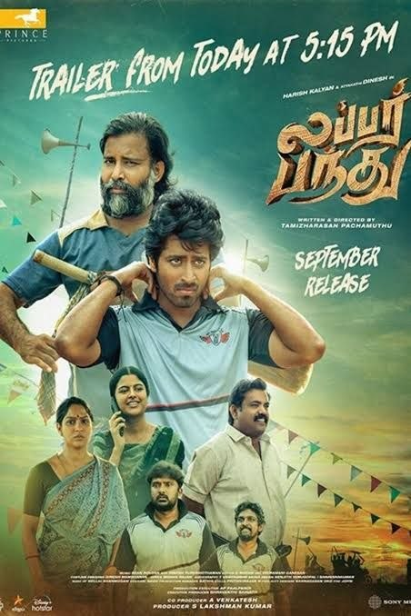

Director: തമിഴരസൻ പച്ചമുത്ത്
Review by: ഷിജിൽ എം പി
ഒരു സിനിമയെ നിങ്ങൾക്ക് പരിചയപ്പെടുത്തുന്നു:
നവാഗതനായ തമിഴരസൻ പച്ചമുത്ത് സംവിധാനം ചെയ്ത ലബർ പന്ത് എന്ന തമിഴ് ചിത്രം. നിലവിൽ ഇത് ഹോട്ട്സ്റ്റാറിൽ മലയാളത്തിൽ കാണാം.
ഒരേ സമയം സ്പോർട്സ് സിനിമയും പ്രണയചിത്രവും സ്ത്രീപക്ഷ സിനിമയും രാഷ്ട്രീയ ചിത്രവുമാണ് ലബർ പന്ത്. നാട്ടിൻപുറത്തെ കണ്ടം ക്രിക്കറ്റിന്റെ പശ്ചാത്തലത്തിൽ അനാവൃതമാകുന്ന കഥ, അതിമനോഹരമായ പ്രണയ സിനിമ. ഇവിടെ റിവ്യൂ ഇടാൻ പാകത്തിൽ അടുത്ത കാലത്തുകണ്ട മികച്ച ചിത്രങ്ങളിൽ ഒന്ന്. സമയം കിട്ടിയാൽ കാണാൻ ശ്രമിക്കൂ 😊